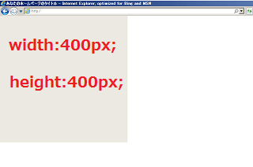
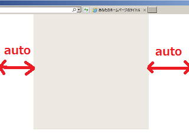

領域の幅と高さを指定する widthとheight
div領域などの「幅」と「高さ」を指定する際はwidthやheightを使用します。
例えば、サイト全体の横幅を400px、高さも400pxに指定する際、
#outer {width:400px;height:400px;}などと記述します。
この場合、次のように左上に詰めて表示されます。
#outer {
width:400px;
height:400px;
}

これを中央に寄せる場合、margin: 0px auto;などと指定すると左右の余白が自動的に均等に取られますので、中央に寄せることができます。このmarginについてはこちらのページをご参照ください。
#outer {
width: 400px;
height: 400px;
margin: 0px auto;
}

親要素のbodyの箇所にtext-align:center;などと記述しても、ブロック要素についてはセンタリングはされませんので、margin: 0px auto;を指定するようにしましょう。
また、通常の場合、コンテンツが増えるに従い自動的に縦方向へ伸びていきますので、heightについては特に設定しない方がよいです。
#outer {
width: 400px;
margin: 0px auto;
}
heightは、ヘッダーやフッターなどの箇所で高さを指定したい時にだけ指定するとよいでしょう。
■paddingやborderと同時に指定しない
ブラウザによってpaddingの解釈の仕方が違いますので、widthやheightと同時に指定すると、paddingの分だけズレてしまうことがあります。
例えば、width:400pxでpaddingを左右に10pxづつ取った場合、ブラウザによっては幅が420pxになってしまうことがあります。このため、innerなどの形で内側にもうひとつ別の領域をかませ、widthとpaddingを別々に設定しているケースが多いです。
#outer {
width: 400px;
}
#outer-inner {
padding:10px;
}
width幅を設定した領域には、paddingやborderを同時に指定しないと覚えておくとよいでしょう。
■サイト全体の横幅は1000px程度が多い
実際にwidth幅を指定する際、運営者の好みにもよりますが、概ね全体の横幅を1000px程度に設定しているケースが多いです。現在の主流の液晶モニターの解像度にもよりますが、大型のワイドタイプのモニターが多くなってきているため、あまりに狭い幅をとってしまうと左右に空白が生じてしまい閲覧しずらいです。
逆に、横幅を広く取った場合も１行の文字数が長くなりますので、左右に目を走らせる必要がでてきて閲覧しずらくなります。また、中型のノートパソコンで閲覧した際などははみ出てしまうケースもあるかもしれません。
一般的なテキスト主体のニュースサイトの場合、１行の文字数を40～45文字前後、フォントサイズをデフォルトの16px、この状態でサイドバーの広告の領域を300px程度とると全体の幅が1000pxぐらいになりますが、そのぐらいで設定しているケースが多いように思います。
コンテンツ部分のwidthについては、font-familyに等幅フォントを指定した状態で、１行の文字数とfont-sizeからwidthの値を計算するとよいでしょう。
font-sizeに合わせた最適なwidth幅
■スクロールバーの有無の違い
コンテンツ量が多く、縦方向へ長いサイト場合、画面からはみ出た部分を閲覧するためにスクロールバーが右側に表示されます。けれども、コンテンツが少ないページの場合、画面からはみ出る部分がないため、スクロールバーは表示されません。
そのため、以下のような状況になることがあります。
トップページ：スクロールバー無し
個別ページ：スクロールバー有り
このような場合、スクロールバーの幅の有無の分だけ表示がずれてしまうため、トップページから個別ページへと移動した際に表示がカクカクしてしまいます。
これに対処する場合、heightで高さを指定してスクロールバーを無理やり表示させるよりも、overflow-y:scroll;を指定してスクロールバーを常に表示させることをおすすめします。
body {
overflow-y:scroll;
}
■行の高さを指定する際はline-heightを使用
heightにつきましては、ヘッダーやフッターなどdiv領域の高さを指定する際に使用することが多いです。一方、行の高さを指定する際はline-heightを使用します。
このline-heightの詳細につきましては、こちらのページをご参照ください。
行の高さや行間を指定する line-height